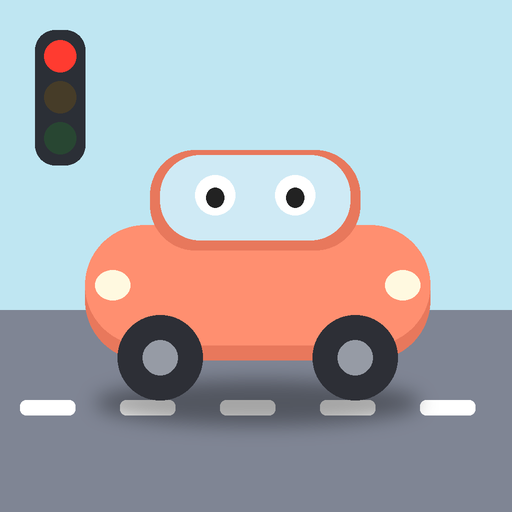

iPhone・iPad
到底怎麼考過駕照的
汽機車題庫・3D 路考場考模擬（Clay Drive Taiwan）
支援與聯絡
遇到問題、發現題目有誤，或有任何建議，歡迎來信：aggie13684972@gmail.com
來信時附上手機型號、iOS 版本和問題畫面截圖，會比較快處理。
常見問題
- 需要註冊或登入嗎？
- 不需要。打開就能玩。
- 換手機時進度會跟著走嗎？
- 目前進度只存在手機本機，換手機或刪除 App 後會從頭開始。
- 怎麼重新開始？
- App 內「設定 → 重設所有進度」。
- 題目是官方的嗎？
- 筆試題目依交通部公路局公告題庫整理；遊戲自製的情境題會標示「遊戲自製」。本 App 不是官方 App，實際考試以監理機關最新公告為準。
- 場考分數準嗎？
- 扣分項目和分數參考監理站評分表，但考場尺寸與判定是遊戲模擬，不等同實際考試結果，也不能取代駕訓班與實際道路練習。
- 星星、金幣差在哪？
- 星星是你的駕駛實力（每關最多 3 顆，不會花掉），累積星星會解鎖地圖和車款；金幣是零用錢，用來買車款和街景擺設。
- 為什麼有廣告？
- App 免費，靠 Google AdMob 廣告維持。廣告只出現在模擬考、錯題本練習的前後、部分任務結算後和題庫畫面下方，開車的時候不會出現。
- 危險感知題怎麼沒有影片？
- 官方影片不能放進 App，所以用遊戲動畫重現題目情境，畫面會標示「遊戲重現情境・非官方影片」。
- 畫面卡卡的？
- 到「設定 → 畫質」選「省電」。
- 沒有聲音？
- 請確認 App 內「設定 → 音效」是「開」，並調高手機音量。
隱私權
開發者不蒐集你的個人資料，遊戲進度只存在手機裡。App 內的 Google AdMob 廣告會由 Google 依其政策蒐集部分裝置資料。詳見 隱私權政策。
© 2026 到底怎麼考過駕照的